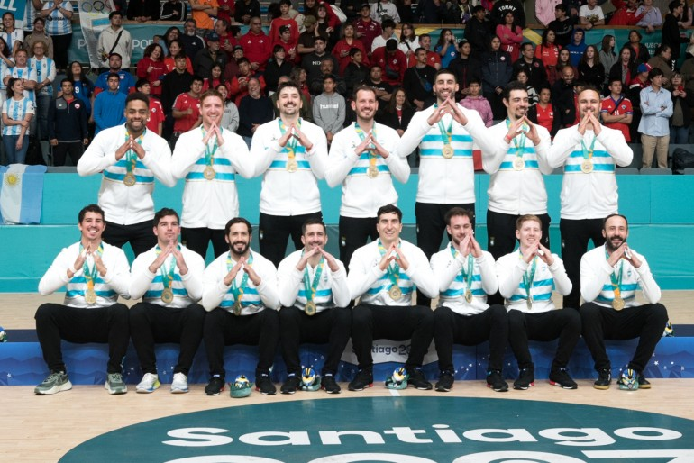

¡Argentina rumbo a París 2024!
05/11/2023
Argentina jugó una final extraordinaria de principio a fin. Los dirigidos por Guillermo Milano superaron a Brasil 32 a 25, se coronaron bicampeones panamericanos y jugarán su cuarto Juego Olímpico (Londres 2012, Río 2016, Tokio 2020 y París 2024).
Leer más